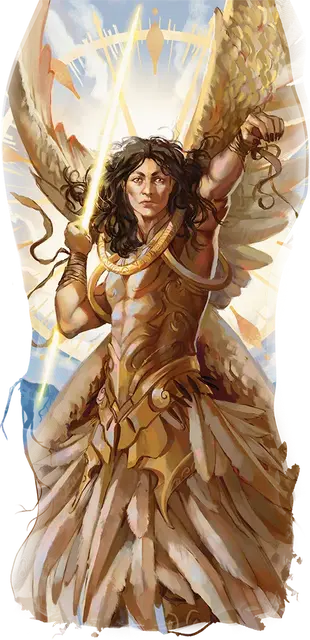

Аликсиан Бессердечный
Alyxian the Callous
Большой Небожитель, законно-злой, именной НИП

Класс Доспеха 17 (полулаты)
Хиты 157 (15к10 + 75)
Скорость 30 футов, летая 90 футов
| мод | спас | ||
|---|---|---|---|
| СИЛ | 23 | +6 | +10 |
| ЛОВ | 18 | +4 | +4 |
| ТЕЛ | 21 | +5 | +9 |
| мод | спас | ||
|---|---|---|---|
| ИНТ | 15 | +2 | +2 |
| МДР | 16 | +3 | +7 |
| ХАР | 20 | +5 | +5 |
Навыки Восприятие +7, Обман +9, Проницательность +7
Иммунитет к урону излучение
Иммунитет к состояниям захват, испуг, истощение, окаменение, опутанность, очарование, ошеломление, паралич
Чувства истинное зрение 120 футов, пассивное Восприятие 17
Языки Общий, Небесный, Эльфийский, Телепатия 120 фт.
Опасность 12 (8400 опыта)
Бонус мастерства +4
Особенности
Благословенный богами. Аликсиана нельзя застать врасплох и нельзя превратить в другую форму против его воли.
Легендарное сопротивление (2/день). Если Аликсиан проваливает спасбросок, он может вместо этого сделать спасбросок успешным.
Обновление Апотеона. Когда хиты Аликсиана Бессердечного опускаются до 0, его тело исчезает и сбрасывает крылья, а сам он поднимается на ноги в своей третьей форме, Аликсиана Обездоленного [Alyxian the Dispossessed]. Его значение инициативы не меняется.
Действия
Мультиатака. Аликсиан совершает две атаки Сияющим копьём. Он может заменить одну из этих атак Ослепляющей телепортацией.
Сияющее копьё. Рукопашная или Дальнобойная атака оружием: +10 к попаданию, досягаемость 5 футов или дистанция 120 футов, одна цель. Попадание: 15 (2к8 + 6) урона излучением.
Ослепляющая телепортация. Аликсиан телепортируется вместе со всем снаряжением, которое он носит или несёт, в свободное пространство, которое он может видеть в пределах 120 футов. Каждое существо в пределах 5 футов от его нового местоположения должно преуспеть в спасброске Телосложения Сл 17, иначе станет ослепленным до конца своего следующего хода.
Божественное разрушение (1/день). Аликсиан высвобождает божественную энергию в 60-футовом конусе. Каждое существо по его выбору в этой области должно совершить спасбросок Телосложения Сл 17. При провале существо получает 31 (7к8) урона излучением и падает ничком. При успехе существо получает половину этого урона и не падает ничком.
Легендарные действия
Аликсиан может совершить 3 легендарных действия, выбирая из представленных ниже вариантов. За один раз можно использовать только одно легендарное действие, и только в конце хода другого существа. Аликсиан восстанавливает использованные легендарные действия в начале своего хода.
Атака. Аликсиан совершает одну атаку Сияющим копьём.
Небесные цепи. Аликсиан нацеливается на одно существо, которое он может видеть в пределах 120 футов. Цель должна преуспеть в спасброске Силы Сл 17, иначе быть опутана магическими цепями на 1 минуту. Будучи опутанной данным образом, цель ни каким образом не может покинуть это пространство. Существо может повторять спасбросок в конце каждого своего хода, оканчивая на себе эффект в случае успеха.
Вспышка (стоит 2 действия). Аликсиан нацеливается на одно существо, которое он может видеть в пределах 30 футов. Вокруг цели вспыхивает свет, нанося ей и существам в пределах 10 футов от неё 17 (5к6) урона излучением.
Логово
Из озера поднимаются рухнувшие храмы Сеханин «Лунной Ткачихи», Авандрой «Несущей Перемены», и Кореллоном «Небесным Сердцем», придуманные отчаявшимся и одиноким Апотеоном. Эти сооружения стоят на скалистых островах высотой 20 футов. Независимо от его нынешней формы, Аликсиан может использовать силу этих осквернённых руин, чтобы совершать действие логова. Каждое действие логова связано с определенным местом; когда используется действие логова, соответствующие руины начинают светиться ярким малиновым светом, который сохраняется до тех пор, пока не наступит инициатива «20» в следующем раунде.
Действия логова
При значении инициативы «20» (проигрыш при ничье), Аликсиан может совершить действие в логове, чтобы создать один из следующих магических эффектов; он не может использовать один и тот же эффект два раунда подряд:
Хватка Авандры. Аликсиан использует силу разрушенного храма Авандры (область H2), чтобы создать водяное щупальце, которое поднимается из озера. Одно существо, которое Аликсиан может видеть и которое не погружено в озеро, должно преуспеть в спасброске Ловкости Сл 15, иначе станет опутанным щупальцем. Щупальце - это Большой объект, который имеет КД 10, 15 хитов и обладает иммунитетом урону психической энергией и ядом. Щупальце исчезает, когда его хиты уменьшаются до 0 или в следующий раз, когда Аликсиан совершает действие логова.
Очарование Кореллона. Аликсиан вызывает столп магического света, появляющийся из разрушенного храма Кореллона (область H3). Свет входит в тело одного существа, которое Аликсиан может видеть, но которого нет внутри разрушенного храма Кореллона или на вершине скалистого острова, который его поддерживает. Существо должно преуспеть в спасброске Мудрости Сл 15, иначе станет очарованным Аликсианом до тех пор,пока не наступит инициатива «20» в следующем раунде.
Мучения Сеханин. Аликсиан использует силу разрушенного храма Сеханин (область H4), чтобы создать водяную фигуру в пространстве одного существа, которое либо находится на озере, либо погружено в него. Водяная фигура принимает вид смутно похожее на существо, пространство которого она занимает, и наносит по нему одну рукопашную атаку (+7 к попаданию). При попадании существо получает 8 (1к8 + 4) дробящего урона.
Независимо от того, попадает он или промахивается, водяная форма исчезает после совершения своей атаки.